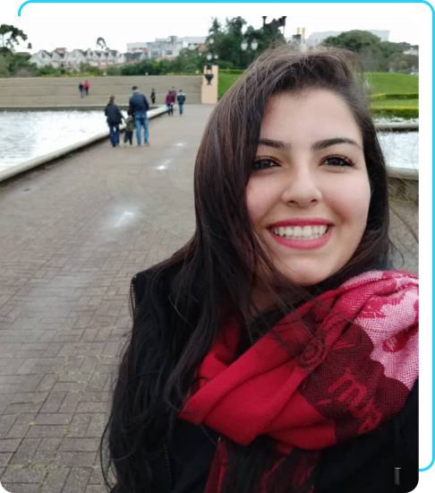
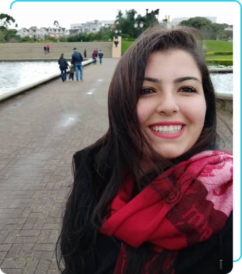

Olá! Meu nome é Leticia Passoni, e estou em busca de uma oportunidade para atuar como Analista ou Cientista de Dados. Sou comprometida em transformar dados complexos e processos em insights valiosos que impulsionem decisões estratégicas e inovação dentro das empresas.
Sobre Mim
Sou uma profissional apaixonada por Ciência de Dados, Análise de Sistemas e Processos, com uma forte habilidade para resolver problemas complexos e otimizar fluxos de trabalho. Meu objetivo é auxiliar empresas a tomarem decisões, utilizando dados de maneira eficiente e estratégica.
O Eu Profissional
Com habilidades técnicas que incluem Análise de Dados, Excel, Power Bi, Power Query, Python, SQL, Metabase, desenvolvimento web, Pacote Office, Git, GitHub, VBA e Prototipagem. Trago um conjunto diversificado de competências que me permitem abordar problemas de diferentes ângulos e encontrar soluções criativas. Possuo soft skills essenciais como comunicação eficaz, trabalho em equipe, e inteligência emocional, que me permitem adaptar rapidamente a diversos contextos e desafios.
Trajetória Profissional
Minha trajetória profissional é marcada por experiências enriquecedoras que
contribuíram para meu desenvolvimento contínuo. Recentemente, atuei como
Assistente de Criação na Tecpower, capacitando equipes no uso de sistemas internos,
organizando e digitalizando dados de clientes, e criando conteúdo digital inovador.
Antes disso, trabalhei como Auxiliar de Enfermagem, garantindo o bem-estar e a
segurança dos pacientes em ambiente hospitalar e domiciliar, executando procedimentos
essenciais e oferecendo suporte emocional a pacientes e familiares.
Também adquiri experiência em suporte técnico na Atento Brasil S/A, onde
forneci assistência técnica de alta qualidade para serviços de internet, TV
e telefonia. Minha jornada profissional começou como Assistente Administrativo
na Displan Encomendas Urgentes Ltda., onde fui responsável por atendimento ao cliente
e gerenciamento de informações no sistema.
Formação Acadêmica e Cursos
Meu compromisso com a educação contínua se reflete em minha formação acadêmica e cursos complementares. Estou atualmente concluindo a graduação em Análise e Desenvolvimento de Sistemas pela Uninter EAD, e cursei Ciência de Dados pela DNC EAD. Além disso, participei de diversos cursos, incluindo Fundamentos de Data Science e Inteligência Artificial pela Data Science Academy, Python e Desenvolvimento Web pelo Senac SJC, entre outros.
A Importância de Cada Fase
Cada fase da minha vida profissional foi crucial para moldar quem sou hoje. Desde a atenção aos detalhes e empatia como Auxiliar de Enfermagem, passando pela resolução de problemas técnicos na Atento, até a criatividade e inovação na Tecpower. Todas essas experiências me proporcionaram um olhar apurado, analítico e voltado para processos, preparado para enfrentar desafios complexos e contribuir de maneira significativa para o sucesso das empresas.
Estou pronta para transformar desafios em oportunidades de aprendizado e crescimento. Vamos juntos alcançar novos patamares de excelência e inovação? 🚀
Contato:
leticiapassoni@hotmail.com
(12) 98808-5524
.png)
.png) 
